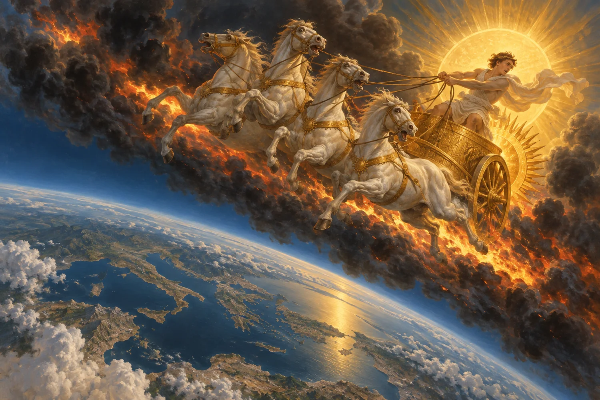

Che cosa dicono i testi
Autore, data, parole effettive, varianti, contesto e storia della trasmissione. È il livello che può essere controllato direttamente.
Guida iniziale · metodo, fonti e ipotesi
Nel mito greco Fetonte perde il controllo del carro del Sole e incendia la Terra. Per il progetto, questo racconto apre una domanda verificabile: tradizioni diverse potrebbero conservare memorie trasformate di uno o più eventi cosmici reali?
Torna alla pagina principale
Fetonte è innanzitutto un personaggio del mito greco. Platone scrive che dietro la favola vi sarebbe una deviazione dei corpi celesti e un incendio della superficie terrestre; Ovidio sviluppa più tardi il racconto del carro solare fuori controllo. Questi testi sono attestati. Non attestano però un asteroide, un passaggio radente o una periodicità di cinquecento anni.
Il progetto Fetonte verifica una seconda possibilità: che il mito sia la rielaborazione di fenomeni naturali eccezionali e che alcuni racconti di fuoco, oscuramento, sconvolgimento delle acque e caduta di materiali possano essere confrontati con tracce storiche. L'identificazione di tutti questi racconti con un solo corpo ricorrente rimane speculativa.
Autore, data, parole effettive, varianti, contesto e storia della trasmissione. È il livello che può essere controllato direttamente.
Il progetto esplora un corpo relativamente piccolo che interagisce con l'atmosfera senza necessariamente produrre un cratere. Il modello deve ancora superare verifiche energetiche, orbitali e geologiche.
Ritorni periodici e possibile controllo artificiale sono il livello più audace. L'assenza di una spiegazione naturale non costituisce una prova di intenzionalità.
Le date sono ipotesi di lavoro nate dall'accostamento di crisi storiche e tradizioni. Non rappresentano una cronologia dimostrata dei passaggi.
Primo Periodo Intermedio egizio, crisi mesopotamiche e racconti di piena sono confrontati entro una finestra ampia, con sincronismi ancora problematici.
Tall el-Hammam e le tradizioni su Sodoma offrono un caso di distruzione eccezionale, ma identificazione del sito, data e causa restano controverse.
Incendi, siccità, migrazioni e testi anomali formano il dossier più articolato. La crisi è attestata; una causa cosmica comune non lo è.
Platone, testi biblici, Ugarit e tradizioni norrene vengono letti distinguendo parole originali, traduzione e interpretazione moderna. Una somiglianza narrativa non basta a dimostrare un evento comune.
Il caso dell'eclissi di Ugarit · Gioele, Isaia e i profeti · Ragnarök e Fimbulvetr
Per il Tardo Bronzo il progetto confronta cronologie di incendi con siccità anatolica e aridità levantina. La sovrapposizione temporale è un indizio da quantificare, non una prova automatica di causalità.
Il Kolbrin contiene una descrizione molto aderente al modello del “Distruttore”, ma la sua provenienza antica non è documentata. Le profezie di oscuramento appartengono invece a testi e contesti differenti, che vanno valutati separatamente.
Una ricerca credibile deve poter fallire. L'ipotesi si indebolisce se le cronologie diventano incompatibili quando migliorano le datazioni; se le somiglianze dipendono da testi tardi o collegati fra loro; se incendi, siccità e migrazioni sono spiegati meglio da processi regionali indipendenti; oppure se il modello fisico richiede energie e traiettorie impossibili senza lasciare le firme previste.
Si rafforzerebbe invece con marcatori fisici specifici, coevi e distribuiti secondo una previsione geografica formulata prima della selezione dei siti, oltre che con testi indipendenti databili e descrittivamente precisi.
Per una prima verifica conviene partire dal testo di Platone, poi scegliere una finestra cronologica e controllare separatamente fonti, dati e spiegazioni alternative. I video mostrano mappe e sequenze; i dossier rendono consultabili i passaggi essenziali.